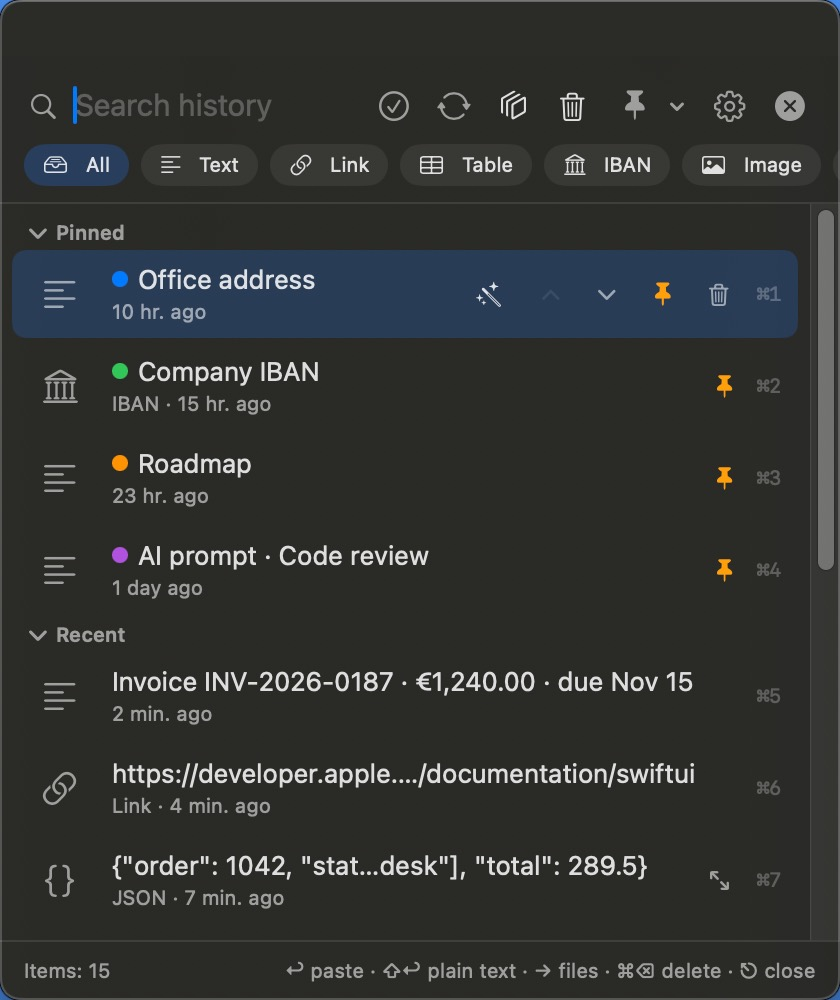
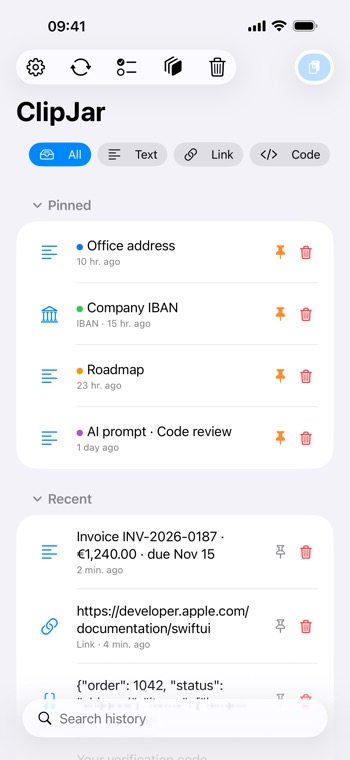
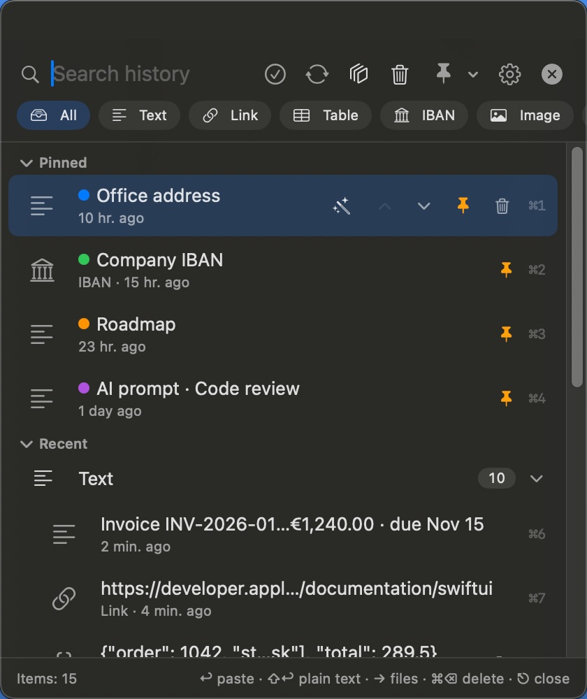
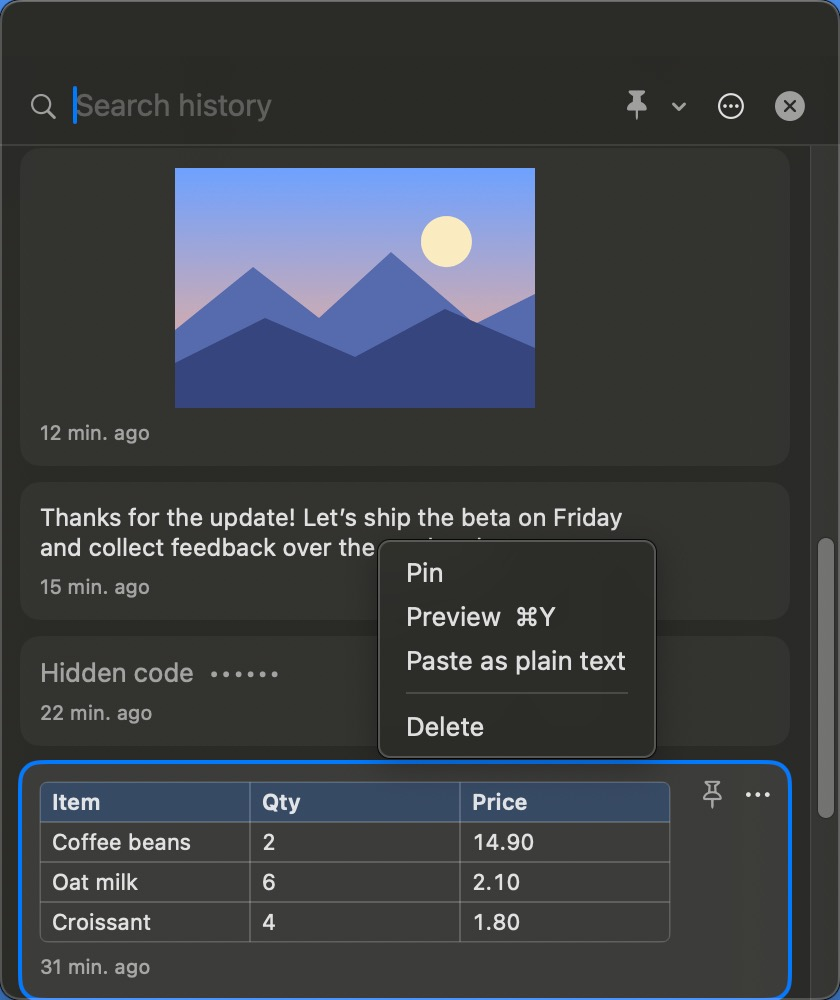
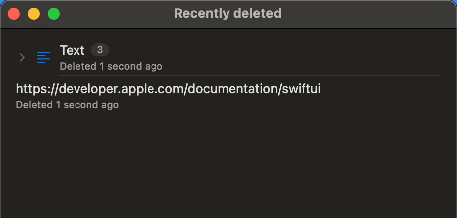
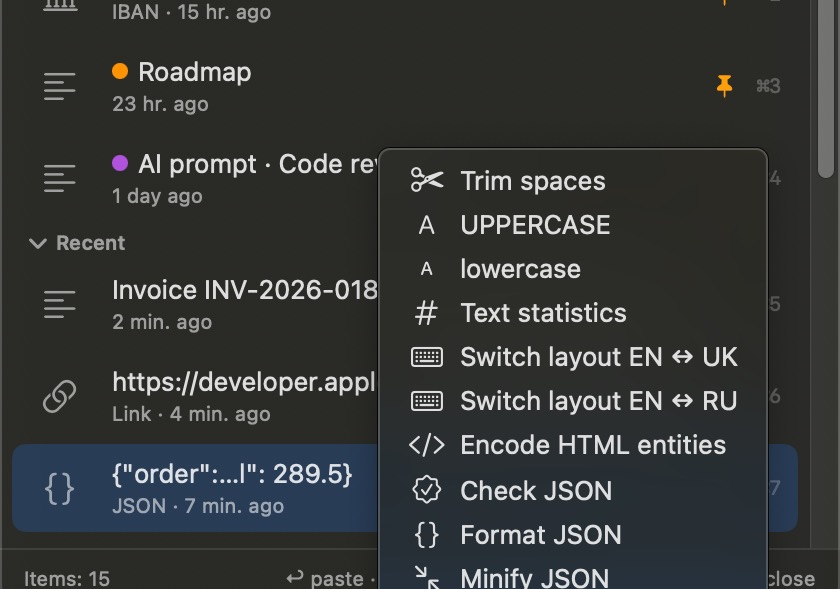
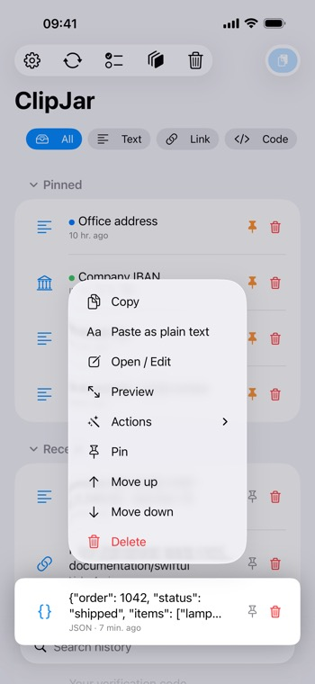
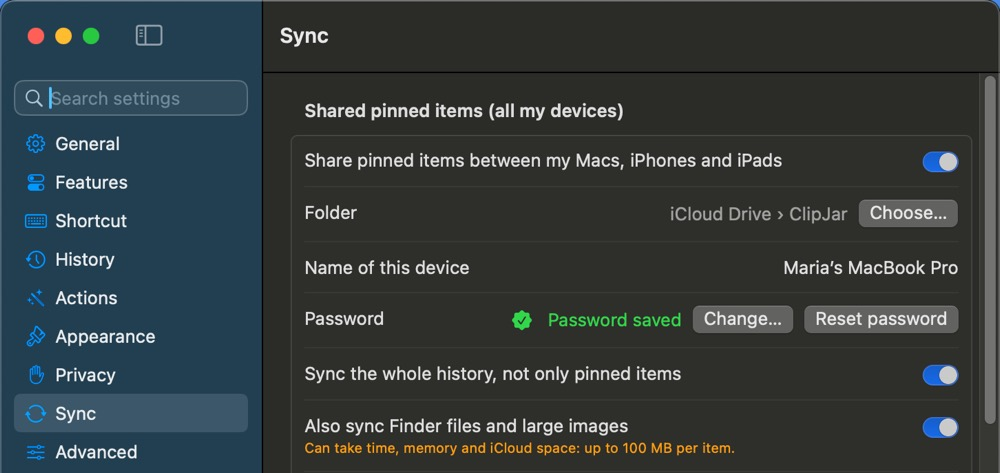
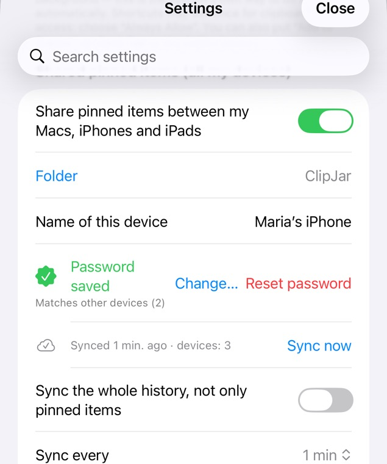

ClipJar-Hilfe
Kurze Anleitungen für ClipJar auf Mac, iPhone und iPad.
Inhalt
- Wie Einträge in den Verlauf kommen
- Einsetzen
- Profile
- Anheften, verschieben, löschen
- Markierungen, Papierkorb und Mehrfachauswahl
- Suche und Filter
- Gruppen und Filter nach App
- Ansicht „Karten“
- Zuletzt gelöscht
- Smarte Aktionen
- Öffnen und bearbeiten
- „Öffnen in …“ und „Markierungen“
- ClipJar-Tastatur
- Kurzbefehle-Automation
- Datenschutz
- Ausgeblendete Codes und Karten
- Isolierte Zwischenablagen
- Wie lange Einträge bleiben
- Synchronisierung zwischen Geräten
- Eigene Sprachen und Formate
- Auf ein anderes Gerät übertragen
- Einstellungen zurücksetzen
- Free und Pro
Wie Einträge in den Verlauf kommen
MacClipJar beobachtet die Zwischenablage: Alles, was du kopierst (⌘C), erscheint von selbst im Verlauf. Kopien aus ausgeschlossenen Apps (standardmäßig Passwortmanager) werden ignoriert. Menüleistensymbol → „Verlauf pausieren“: Solange das aktiv ist, wird Kopiertes nicht gespeichert (die Zwischenablage selbst funktioniert wie gewohnt).
iPhone und iPadiOS erlaubt Apps nicht, die Zwischenablage zu beobachten. Füge Einträge mit der Taste „Einsetzen“ oben hinzu, über Teilen → ClipJar, mit der ClipJar-Tastatur oder einer Kurzbefehle-Automation. Die Pause-Taste (unter Darstellung einschalten) stoppt die Prüfung der Zwischenablage beim Öffnen von ClipJar; Einsetzen und Teilen funktionieren weiter.
Einsetzen
MacDrücke ⌥⌘V (in den Einstellungen änderbar), um das Panel zu öffnen. ↑↓ wählen, Return setzt ein, ⇧Return setzt reinen Text ein, ⌘1…⌘9 setzen nach Nummer ein. ←→ klappen eine Gruppe (oder eine Dateiliste) zu und auf, ⌥↑⌥↓ verschieben einen Eintrag innerhalb seiner Gruppe. Das Panel öffnet sich neben dem Textcursor, an dem du tippst; meldet die App den Cursor nicht, neben dem Mauszeiger.
iPhone und iPadTippe auf einen Eintrag, um ihn zu kopieren, und setze ihn dann wie gewohnt in jeder App ein. Lange drücken für mehr: als reinen Text kopieren, Aktionen, verschieben, löschen.


Profile
MacEin Profil ist eine Auswahl an Funktionen: was ClipJar erkennt und welche Aktionen es anbietet. „Einfach“ ist nur Kopieren und Einfügen, „Alltag“ ergänzt Bildschirmfotos und Text aus Bildern, die übrigen Profile sind für Entwicklung, Finanzen und Inhalte gedacht. Auswählen unter Einstellungen → Funktionen oder über das Menüleistensymbol → Profil. Mac-Profile sind unabhängig von den Profilen auf iPhone und iPad. Eigene Profile (Pro) werden mit deinen anderen Macs synchronisiert; das gewählte Profil bleibt auf jedem Mac eigen.
iPhone und iPadEin Profil legt fest, welche Tasten und Menüpunkte zu sehen sind. „Einfach“ ist eine schlichte Liste: Tippe auf einen Eintrag, um ihn zu kopieren. „Standard“ und „Vollständig“ ergänzen Anheften, Verschieben, Bearbeiten, Filter, Aktionen und Etiketten. Auswählen unter Einstellungen → Darstellung → Profil. Profile auf iPhone und iPad sind unabhängig von den Mac-Profilen. Eigene Profile (Pro) werden mit deinen anderen iPhones und iPads synchronisiert; das gewählte Profil bleibt auf jedem Gerät eigen.
Anheften, verschieben, löschen
MaciPhone und iPadAngeheftete Einträge bleiben oben und werden weder vom Verlaufslimit noch von der Aufbewahrung entfernt. Pfeile verschieben einen Eintrag innerhalb seiner Gruppe. Gelöschtes lässt sich mit „Widerrufen“ zurückholen (⌘Z auf dem Mac). Eine Gruppe wird als Ganzes verschoben; die Reihenfolge bleibt nach einem Neustart erhalten. Auf dem Mac verschiebt ⌥⌘↑ einen Eintrag oder eine Gruppe ganz nach oben. Bei aktiver Pro-Synchronisierung ist die Reihenfolge der angehefteten Einträge auf allen deinen Geräten gleich.
Markierungen, Papierkorb und Mehrfachauswahl
MacRechtsklick auf einen Eintrag → Markierung, um eine Farbe zu vergeben (🔴🟠🟡🟢🔵🟣⚪️). Markierungen werden mit deinen anderen Geräten synchronisiert. Gelöschtes landet im Papierkorb (🗑 oben): wiederherstellen, ansehen oder endgültig löschen. ⌘Z macht das letzte Löschen rückgängig. In Pro lässt sich der Papierkorb in den Verlaufseinstellungen abschalten. ⌘-Klick markiert mehrere Einträge; Rechtsklick → Alle auswählen / Löschen (N). ⌘⌫ löscht die markierten. Esc schließt das Fenster.
iPhone und iPadEintrag lange drücken → Markierung, um eine Farbe zu vergeben. Markierungen werden synchronisiert. Gelöschtes landet im Papierkorb (🗑 neben Bearbeiten): wischen zum Wiederherstellen oder endgültigen Löschen, lange drücken zur Vorschau. In Pro lässt sich der Papierkorb abschalten. Tippe auf Bearbeiten, markiere Einträge mit den Kreisen, unten Alle auswählen / Löschen (N). Einstellungen → Darstellung → Profil → Einfach blendet alles Zusätzliche aus.
Suche und Filter
MaciPhone und iPadEinfach tippen – gesucht wird im ganzen Verlauf. Filter zeigen nur Links, Code, Tabellen, Bilder, IBANs und andere Typen.
Gruppen und Filter nach App
MaciPhone und iPadDie Taste ⧉ gruppiert angeheftete und letzte Einträge nach App, Gerät oder Typ: Ab 2 Einträgen wird daraus eine Zeile mit Anzahl – klicken bzw. tippen zum Aufklappen, ← klappt ein. Rechtsklick oder Wischen auf eine Gruppe: alle anheften, lösen oder die ganze Gruppe löschen (Gelöschtes landet in „Zuletzt gelöscht“). Der Filter „App“ zeigt nur Einträge einer App. Beim Suchen und Filtern werden keine Gruppen gezeigt.

Ansicht „Karten“
MacEinstellungen → Darstellung → Oberfläche → Karten (Pro): ein kompaktes Fenster mit Einträgen als Karten. Klicke auf eine Karte, um sie einzufügen. Über die Taste ⋯ oder einen Rechtsklick kannst du anheften, die Vorschau öffnen, als reinen Text einfügen, Text erkennen oder löschen. Mit ⋯ oben legst du fest, ob ohne Formatierung eingefügt wird und was die Karten zeigen. Synchronisierung, Schutz, Bildschirmfotos und isolierte Zwischenablagen funktionieren weiter; Profile und andere Funktionen gelten in der Standard-Oberfläche. Du kannst jederzeit zurückwechseln.

Zuletzt gelöscht
MaciPhone und iPadGelöschte Einträge landen in „Zuletzt gelöscht“ (Pro). Dort kannst du sie wiederherstellen oder endgültig löschen. Eine komplett gelöschte Gruppe bleibt eine Zeile: Du kannst sie auf einmal wiederherstellen oder löschen oder sie aufklappen und die Einträge einzeln bearbeiten. Codes und Kartennummern verschwinden aus dem Papierkorb, wenn sie ablaufen. Der Papierkorb liegt nur im Arbeitsspeicher und wird beim Beenden von ClipJar geleert; in der Ansicht „Karten“ bleibt nur die letzte Löschung zum Widerrufen.

Smarte Aktionen
MaciPhone und iPadClipJar erkennt, was du kopiert hast, und bietet passende Aktionen an: JSON formatieren, Link bereinigen, mit falschem Tastaturlayout getippten Text korrigieren, IBAN prüfen, Bankdaten in Felder aufteilen. Das Ergebnis wird ein neuer Eintrag.


Öffnen und bearbeiten
MacRechtsklick → Öffnen / Bearbeiten… oder ⌘O. Text öffnet sich in einem Editor (⌘S sichert), Bilder in einer zoombaren Vorschau, Dateien in ihrer Standard-App. Tabellen und formatierter Text erscheinen in der Originalformatierung (Farben, Schriften, verbundene Zellen) auf weißem Blatt; die Taste mit der Palette wechselt zu den Farben des Designs.
iPhone und iPadTippe in einer Zeile auf den Stift oder halte den Eintrag gedrückt → Öffnen / Bearbeiten. Formatierter Text behält Fett und Kursiv. Tabellen und formatierter Text erscheinen in der Originalformatierung (Farben, Schriften, verbundene Zellen) auf weißem Blatt; die Taste mit der Palette wechselt zu den Farben des Designs.
„Öffnen in …“ und „Markierungen“
MacRechtsklick auf einen Eintrag → „Öffnen in …“: Eine Kopie wird in einer anderen App geöffnet (TextEdit, Vorschau, dein Code-Editor). Sichere sie dort mit ⌘S, und die Änderung kommt zu ClipJar zurück. Pro.
iPhone und iPadHalte ein Bild gedrückt → „Markierungen“: zeichnen, Text hinzufügen, zuschneiden. Tippe auf „Fertig“, und das bearbeitete Bild ersetzt den Eintrag an derselben Stelle. Pro.
ClipJar-Tastatur
iPhone und iPadAus dem Verlauf in jeder App einsetzen: Einstellungen → Allgemein → Tastatur → Tastaturen → Tastatur hinzufügen → ClipJar, vollen Zugriff erlauben und dann den Zugriff in den ClipJar-Einstellungen einschalten. Wechseln mit 🌐. Nur Text, nie Codes oder Karten.
Kurzbefehle-Automation
iPhone und iPadDie Aktion „Add to ClipJar“ sichert die Zwischenablage, ohne die App zu öffnen. Lege sie auf „Auf Rückseite tippen“, die Aktionstaste oder eine persönliche Automation.
Datenschutz
MacClipJar nutzt nie das Netzwerk. Der Verlauf auf der Festplatte ist verschlüsselt, der Schlüssel liegt im Schlüsselbund. Einmalcodes, Kartennummern und persönliche Kennungen werden verborgen und bald gelöscht. Kopien aus ausgeschlossenen Apps werden ignoriert.
iPhone und iPadClipJar nutzt nie das Netzwerk. Der Verlauf auf dem Gerät ist verschlüsselt. Einmalcodes, Kartennummern und persönliche Kennungen werden verborgen und bald gelöscht. Die universelle Zwischenablage bleibt aus, bis du sie erlaubst. Schalte unter Datenschutz das Löschen bei Bildschirmsperre ein, dann werden nicht fixierte Einträge beim Sperren des iPhone entfernt.
Ausgeblendete Codes und Karten
MaciPhone und iPadEinmalcodes, Kartennummern und persönliche Kennnummern werden durch Punkte verborgen und automatisch gelöscht. Zum Ansehen wähle „Anzeigen“ im Menü des Eintrags. Hat ClipJar etwas verborgen, das kein Geheimnis ist (etwa eine Bestellnummer), wähle „Kein Geheimnis“ – dann wird es ein normaler Eintrag.
Isolierte Zwischenablagen
MacPro: Einstellungen → Datenschutz → Isolierte Zwischenablagen. Jede App in der Liste (z. B. Terminal) hat ihre eigene Zwischenablage: Wechselst du hinein, kommt ihre zurück, wechselst du weg, deine gemeinsame. Kopien dort werden nur mit deiner Erlaubnis im Verlauf gespeichert und nur mit einer weiteren Erlaubnis synchronisiert. Isolierte Zwischenablagen gehen nie über Apples universelle Zwischenablage aufs iPhone; Text, der auf dem iPhone kopiert wird, während eine solche App offen ist, landet in der gemeinsamen Zwischenablage. Die Funktion muss im Profil aktiviert sein (Funktionen). Bei aktiver Pro-Synchronisierung gelten diese Liste und die Liste „Aus diesen Apps nicht aufzeichnen“ auf allen deinen Macs. Eine App, die auf einem davon nicht installiert ist, wird dort als „Auf diesem Mac nicht installiert“ angezeigt.
iPhone und iPadIsolierte Zwischenablagen gibt es nur auf dem Mac: iOS teilt Apps nicht mit, welche andere App geöffnet ist, daher ist eine eigene Zwischenablage pro App auf iPhone und iPad nicht möglich. Einträge aus isolierten Apps auf dem Mac erreichen das iPhone nur, wenn du ihre Synchronisierung auf dem Mac erlaubst.
Wie lange Einträge bleiben
MaciPhone und iPadDie Verlaufstiefe begrenzt die Anzahl der Einträge, die Aufbewahrung entfernt nicht angeheftete Einträge nach der gewählten Zeit. Das Leeren des Verlaufs lässt sich direkt danach widerrufen. Einträge über den Größenlimits (Bilder und Text, in den Verlaufseinstellungen) werden nicht hinzugefügt; zu große Formatierung wird als reiner Text gespeichert.
Synchronisierung zwischen Geräten
MaciPhone und iPadPro: Aktiviere Einstellungen → Synchronisierung → „Gemeinsame angeheftete Einträge“ und wähle auf allen Geräten denselben Ordner in iCloud Drive und dasselbe Passwort. Dort liegen angeheftete Einträge, Etiketten und eigene Profile verschlüsselt; ClipJar selbst geht nie online. Unter „Meine Geräte“ siehst du alle Geräte: Änderungen eines Geräts ignorieren oder ein altes Gerät vergessen. Ein gelöschter Eintrag wird überall gelöscht. Eigene Formate und Sprachen werden ebenfalls synchronisiert. Ein neues Gerät kannst du jederzeit hinzufügen: Aktiviere dort die Synchronisierung mit demselben Ordner und Passwort. Ein Gerät, das lange nicht synchronisiert hat, wird automatisch vergessen (Einstellungen → Synchronisierung → „Inaktive Geräte vergessen nach“, standardmäßig 1 Jahr); kommt es zurück, bleibt anderswo Gelöschtes nur auf ihm. Vergisst du das Passwort, lassen sich die synchronisierten Kopien nicht entschlüsseln – der lokale Verlauf bleibt erhalten. Passwort: mindestens 8 Zeichen, ohne Leerzeichen am Anfang oder Ende; lateinische Buchstaben lassen sich auf jedem Gerät am leichtesten eingeben.


Eigene Sprachen und Formate
MaciPhone und iPadSprache: Einstellungen → Erweitert → „Vorlage erstellen“, Zeilen übersetzen (die help.*-Zeilen übersetzen auch diese Hilfe), eigenes code und name setzen, „Neu laden“ drücken und unter Darstellung → Sprache auswählen. Nummernformat: Unter Erkannte Nummern „Vorlage erstellen“, anpassen und „Neu laden“ drücken; „Was erkannt wird“ zeigt alles, was ClipJar kennt. Mit Synchronisierung gelangen deine Sprachen und Formate auf deine anderen Geräte.
Auf ein anderes Gerät übertragen
MaciPhone und iPadExportiere die Einstellungen in eine Datei (optional mit Passwort) und importiere sie auf einem anderen Mac oder iPhone – beide nutzen dieselbe Datei. Optionen, die das andere Gerät nicht hat, bleiben für den Rückweg erhalten.
Einstellungen zurücksetzen
MaciPhone und iPad„Alle Einstellungen zurücksetzen“ (Einstellungen → Erweitert) stellt die Standardwerte wieder her. Verlauf, angeheftete Einträge, Kauf, Synchronisierung und eigene Profile bleiben erhalten, und „Vorherige Einstellungen wiederherstellen“ holt die alten Einstellungen zurück.
Free und Pro
MaciPhone und iPadFree: 5 Verlaufseinträge, 3 angeheftete, zwei Basisprofile, Basisaktionen und voller Schutz von Codes und Karten. Pro: bis zu 1000 Einträge, unbegrenzt anheften, alle Profile und eigene, smarte Aktionen, Bankdaten, Bearbeiten, Synchronisierung zwischen deinen Geräten, gespeicherter Verlauf und mehr. Einmalkauf für alle deine Geräte, 7 Tage Testphase.